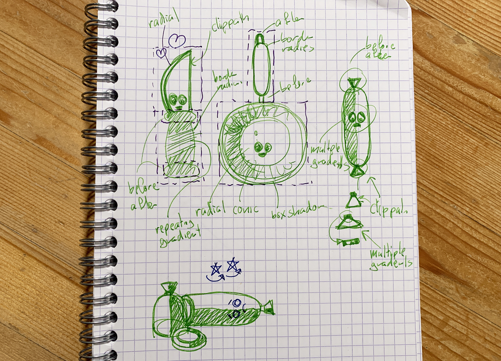

Materiaal bij themasessies
Gradients
De 6 gradients: linear, repeating-linear, radial, repeating-radial, conic, repeating-conic en dan combineren maar.
Oefenen
- Meetypen: De 6 gradients (CodePen)
- Uitwerking: De 6 gradients (CodePen)
- Uitwerking: Background-position percentages (CodePen)
- Meetypen: Spinning rainbow (CodePen)
- Uitwerking: Spinning rainbow (CodePen)
- Uitwerking: Spinning rainbow met SVG filters (CodePen)
- Meetypen: Gedeeld verloop (CodePen)
- Uitwerking: Gedeeld verloop (CodePen)
Links
- Gradients - The basics (CSS tricks)
- I like how percentage background-position works (CSS Tricks)
- Using multiple backgrounds (MDN)
- Sizing background images with background-size (MDN)
- Lea's pattern gallery (Lea Verou)
- Animating a gradient met Houdini (CSS Houdini)
- Minder bekende properties background-attachment, background-clip en background-origin (MDN)
Schetsen
Ik maak veel schetsjes - om te ontwerpen - en om techniek uit te vogelen:

SVG filters
Van CSS filters als shortcuts tot SMIL in een van de 17 FE's (filter effects).
Oefenen
- Meetypen: SVG filter basics (CodePen)
- Uitwerking: SVG filter basics (CodePen)
- Meetypen: Outlined text (CodePen)
- Uitwerking: Outlined text (CodePen)
- Meetypen: Squiggly tekst (CodePen)
- Uitwerking: Squiggly tekst (CodePen)
- Uitwerking: Squiggly vormpjes met ogen (CodePen)
Samples
- Noisy buttons (SMIL) - JS trigger 🤨 (CodePen)
- Lava (sinds1971)
Links
- SVG filters - visueel op een rijtje (yoksel)
- SVG Filters 101 (Codrops)
- The Gooey Effect (CSS tricks)
- Outline Text with <feMorphology> (Codrops)
- Creating Texture with <feTurbulence> (Codrops)
- A Guide to SVG Animations (SMIL) (CSS tricks)
- Understanding SVG Coordinate Systems (Sara Soueidan)
- CSS filter: (MDN)
- SVG <filter> (MDN)
- Filter primitive elements (MDN)
Schetsen
Ik maak veel schetsjes - om te ontwerpen - en om techniek uit te vogelen:
Custom properties
Van themes via (complexe) berekeningen en logica richting Houdini.
Oefenen
- Meetypen: Button states (CodePen)
- Uitwerking: Button states (CodePen)
- Meetypen: Stralenkrans (CodePen)
- Uitwerking: Stralenkrans (CodePen)
- Uitwerking: Menuutje (CodePen)
Samples
- Neon buttons (CodePen)
- Emoji fontein met parameters (sinds1971)
- Carrousel met parameters (sinds1971)
- Lava (sinds1971)
Links
- CSS Variables: var(--subtitle); (Lea Verou - video)
- Custom properties: An introduction (Better Programming)
- Using Custom Property “Stacks” to Tame the Cascade (fallbacks) (CSS tricks)
- Ook gewoon handig voor themes (Stuff & Nonsense)
- calc() - the complete guide (CSS tricks)
- Animating a gradient with Houdini (CSS Houdini rocks)
- CSS Specificity Wars - welke selector wint (Stuff & Nonsense)
Schetsen
Ik maak veel schetsjes - om te ontwerpen - en om techniek uit te vogelen:
Vormpjes maken
Border-radius, gradients, before & after en clip-path en die dan slim combineren.
Oefenen
- Meetypen: Border-radius heeft 8 values (CodePen)
- Uitwerking: Border-radius heeft 8 values (CodePen)
- Meetypen: Hoekjes maken met gradients (CodePen)
- Uitwerking: Hoekjes maken met gradients (CodePen)
- Meetypen: Before en after styling (CodePen)
- Uitwerking: Before en after styling (CodePen)
- Meetypen: Clip-path cookie-cutter (CodePen)
- Uitwerking: Clip-path cookie-cutter (CodePen)
- Meetypen: Vormpjes met ogen (CodePen)
- Uitwerking: Vormpjes met ogen (CodePen)
Samples
- Vormpjes met ogen - alles (CodePen)
- Meer geknutsel met transforms en positioneren (sinds1971)
Links
- The Shapes of CSS (CSS tricks - her-en-der outdated)
- Border-radius heeft 8 values (MDN)
- Fancy Border-Radius (Nils Binder)
- Understanding CSS Multiple Backgrounds (Ahmad Shadeed)
- Gradient angles in CSS (Nils Binder)
- min(), max() en clamp() (op MDN)
- CSS stacking contexts: What they are and how they work (Tiffany B. Brown)
- Understanding Clip Path in CSS (Ahmad Shadeed)
- Clippy - a clip-path polygon() maker (Bennett Feely)
- The SVG `path` Syntax: An Illustrated Guide (CSS tricks)
- SVG path builder (Lea Verou)
- Clip-path scaling (CSS for Designers)
Schetsen
Ik maak veel schetsjes - om te ontwerpen - en om techniek uit te vogelen:
(3D) Transforms
Translate, rotate, origin, perspective en backface en die dan slim combineren.
Oefenen
- Startpunt: De 4 transform functies (Codepen)
- Meetypen: Transform sommetjes (CodePen)
- Uitwerking: Transform sommetjes (CodePen)
- Meetypen: Transform minecraft (CodePen)
- Uitwerking: Transform minecraft (CodePen)
Samples
- Backface-visibility flip (CodePen)
- 3D vouwmenu 🌶 (CodePen)
- Flipperdeflip 🌶🌶 (CodePen)
- Perspective-origin bedienen met pijltjes (Pip)
- Meer geknutsel met positioneren en alles samen (sinds1971)
Links
- CSS Transforms - spec (MDN)
- Multiple transforms - Order matters (rip tutorial)
- Things to Watch Out for When Working with CSS 3D (Ana Tudor)
- Backface-visibility (MDN)
Schetsen
Ik maak veel schetsjes - om te ontwerpen - en om techniek uit te vogelen:
Animeren
Van eenvoudige from-to keyframes tot complexe meervoudige cubic-beziers.
Redenen om te animeren (Val Head):
- Relaties tussen elementen leggen. Bijv: een filter dat in- en uitschuift zodat je weet hoe 'de wereld' in elkaar zit en samenhangt.
- Aandacht op iets vestiging. Bijv. nieuwe content na een refresh met een animatie toevoegen aan een pagina, zodat het even het focuspunt wordt.
- Feedback geven. Bijv. een winkelwagentje even groter laten worden als er een product wordt toegevoegd, zodat duidelijk is dat het toevoegen gelukt is en waar het product is terug te vinden.
- Iets uitleggen. Bijv. gebruikers de eerste keer een animatie van een gesture tonen, zodat ze weten hoe de interactie werkt.
- Het merk karakter geven. De branding ook smoel geven met de wijze van animeren.
Oefenen
- Meetypen: Animatie sommetjes (Codepen)
- Uitwerking: Animatie sommetjes (Codepen)
- Meetypen: Happy knife (Codepen)
- Uitwerking: Happy knife (Codepen)
Samples
- Sanne's experimentjes (sinds1971)
- Vormpjes met ogen - alles (CodePen)
- Draaiende regenboog (Codepen)
Links
- 12 Principles of Animation (Disney)
- Designing Meaningful Animation (Val Head - Video)
- CSS Animations - spec (MDN)
- CSS properties that can be animated using CSS Animations or CSS Transitions (MDN)
- Reduced Motion 'In The Wild' (Val Head)
- CSS Easing Animation Tool (Matthew Lein)
- Curved Text Along a Path (CSS Tricks)
Schetsen
Ik maak veel schetsjes - om te ontwerpen - en om techniek uit te vogelen: